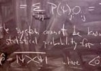

Advances in Optimization & Predictive Science
Measurement & Design of Excited-state Materials
Frameworks & Toolkits for Scientific Computing

Advances in Optimization & Predictive Science
Measurement & Design of Excited-state Materials
Frameworks & Toolkits for Scientific Computing
Research Overview
The focus of my research has been the coupling of theoretical, computational, and experimental approaches for the study of excited-state and energy materials. There are several challenges in the measurement and design of excited-state and energy materials -- the first of which is that experimental techniques are still very limited in the extent that they can measure structural or electronic changes resulting from the material being in an excited state. I have used excited-state absorption spectroscopy to study nonlinear optical materials, and have designed and built new lasers to extend nonlinear absorption spectroscopy to new wavelengths. Recently, I have expanded experimental techniques to Raman and neutron scattering, and have begun developing excited-state vibrational analogues for electronic time-resolved optical spectroscopy. As a theoretical compliment, I utilize quantum chemical methods in the calculation of excited-state materials properties, and work toward the full integration of quantum chemical calculations with both experiment simulations and experimental measurements. My ultimate goal is to develop a framework for the quantitative design of excited-state and energy materials.
Beyond the experimental challenges that exist, there are also difficulties that arise when computationally dealing with excited-state and energy materials. Multi-scale simulations are often required to provide an accurate calculation of bulk material properties for a selected molecular or crystallographic structure, and these calculations are often prohibitively expensive. Predictive calculations, such as a rigorous sensitivity analysis of materials design parameters, amount to a global optimization over design parameter space -- potentially requiring an already prohibitively large simulation to be performed hundreds, if not thousands, of times. Massively parallel, distributed, and asynchronously coupled computational methods must be developed to help minimize the computational time required to produce accurate predictions on the structure and properties of all but the simplest of excited-state and energy materials. I have developed an optimization framework, and also a framework for heterogeneous computing, that when utilized together, can make computationally intractable sensitivity and optimization problems much more tractable. Now, after a minimal amount of work required to bind a computational model to the optimization framework, we can begin to address parameter sensitivity, parameter correlation, and model validation issues for candidate materials models.